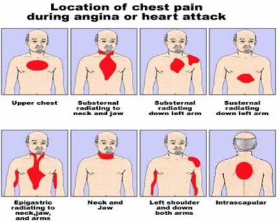
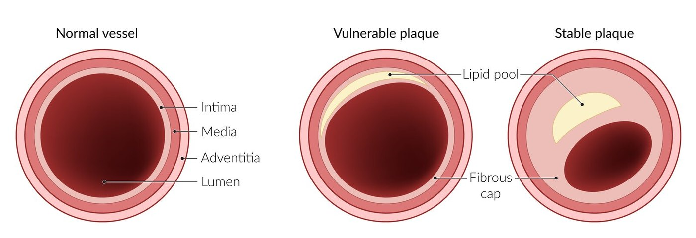
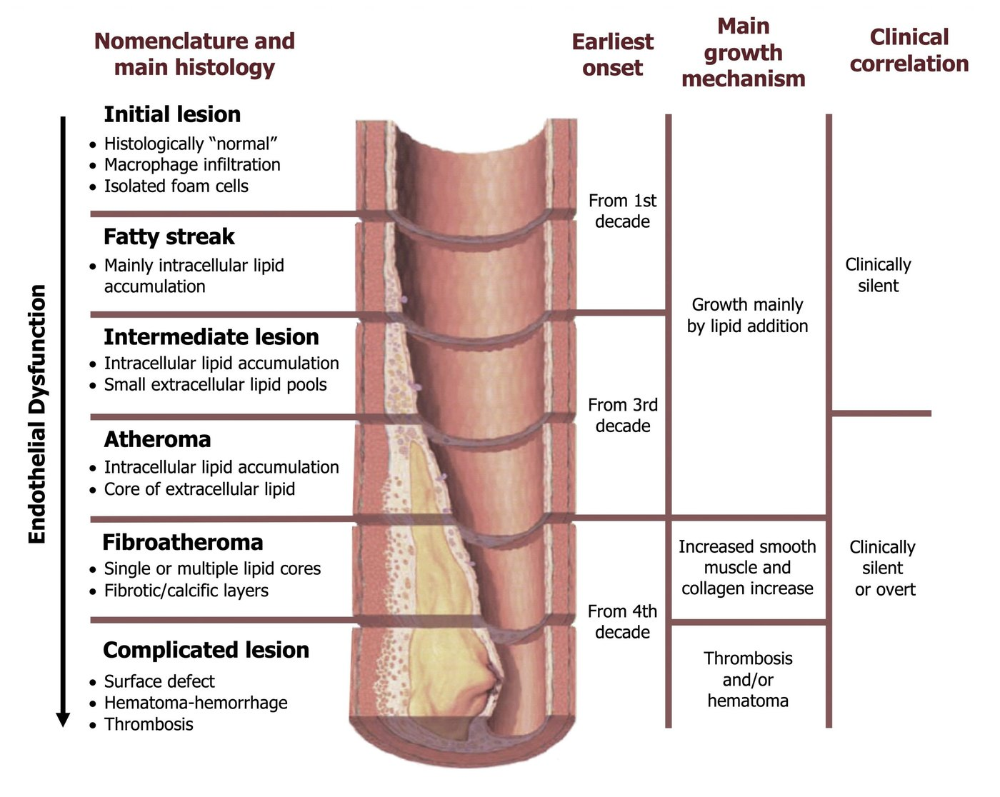
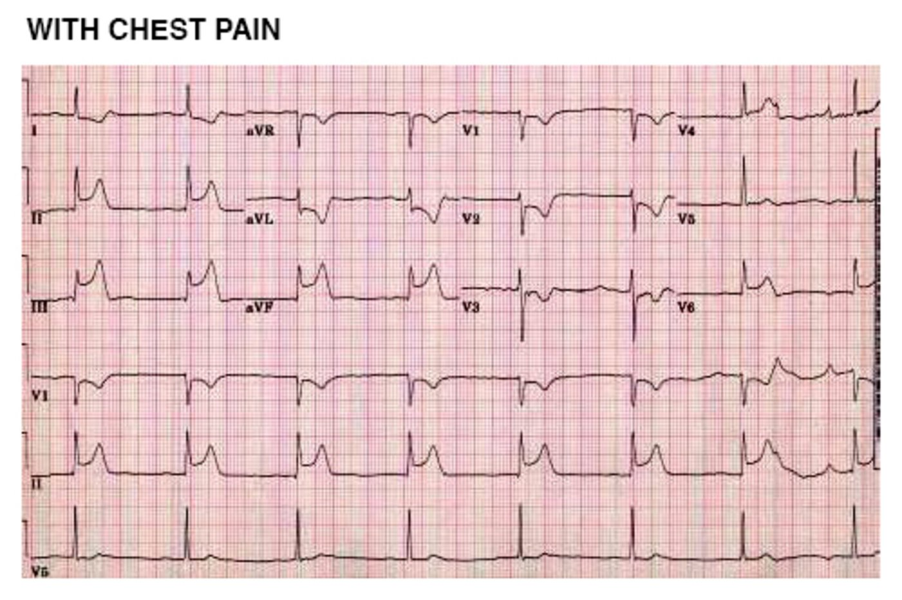
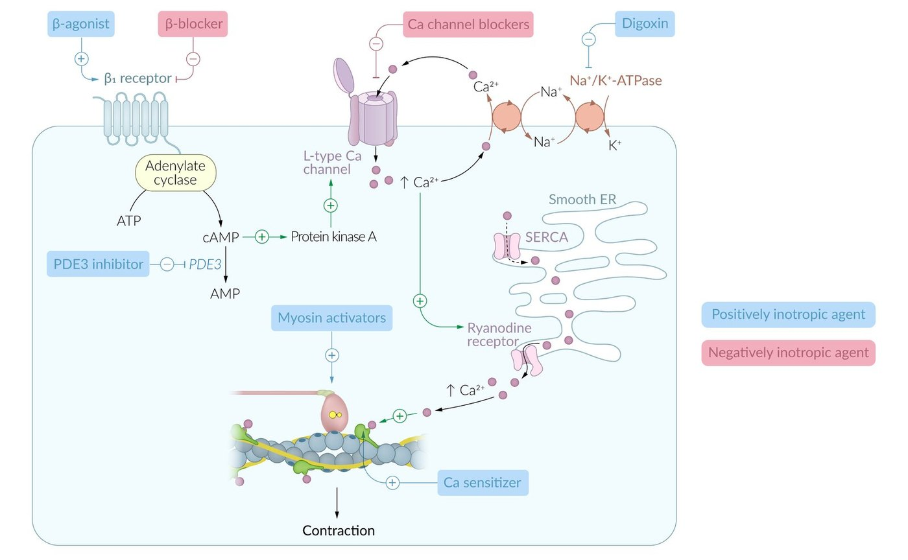

Pharmacologic Management of Ischemic Heart Disease · Kyle R. Scully, PhD · UNE COM · OMK 2 · 2026
Antianginal Drugs
Stable and vasospastic angina as a supply-and-demand problem: nitrates (how they're activated, tolerance, dosage forms, the PDE5 interaction), β-blockers and why they're forbidden in vasospasm, calcium channel blockers, and ranolazine for refractory angina, worked through the lecture's two cases.
LecturerKyle R. Scully, PhD
Sources15 slides + recorded lecture
FocusStable & vasospastic angina
Topics6
Labeled figures14
Exam questions13
Videos6
Orientation
"We could increase supply of oxygen, or we could decrease demand — and one tends to be much easier than the other"
Supply vs Demand
A recorded refresher that builds on OMK 1 and supports the clinical lectures. It covers stable (exertional) angina and vasospastic angina. Acute coronary syndromes (unstable angina, MI) are managed differently, mostly with the antiplatelet and anticoagulant drugs from Heme. Every antianginal works by tipping the oxygen balance, and the reliable lever is lowering demand.
How to read the coloursRed bold = lecturer emphasis / "board favourite"Blue bold = key factYellow = number to memoriseBoard add-on = AMBOSS / board sources, not said in lecture
The hallmark symptom of IHD is chest pain, a very broad presentation. "I believe the stat sits somewhere around 30%" of chest pain being cardiac; keep a wide differential.
Ischemic heart disease covers stable angina, unstable angina and MI (slide 4).

Fig I1Where angina is felt: substernal, radiating to the neck, jaw, left arm or backScully lecture · slide 5
Fig I2Supply vs demand: balanced at rest; with exertion the CAD heart's demand outweighs its fixed supplyScully lecture · slide 6
🧠 Why "decrease demand" is the easy lever
As cardiac activity rises, O₂ demand rises. In angina the supply can't keep up. Raising supply is hard: atherosclerotic plaque and age-related endothelial dysfunction limit it. So most antianginals reduce demand (heart rate, contractility, wall stress from preload and afterload).
Fig I3Why arteriolar dilators don't help angina: ischemic arterioles are already maximally dilated, so dilating the rest "steals" flowAMBOSS
Board add-on In stable CAD the arterioles beyond a fixed stenosis are already maximally dilated. A strong arteriolar dilator only dilates healthy beds and "steals" flow away (coronary steal). That is why nitrates help through venous preload reduction more than through coronary dilation.
Longer, more frequent, lower exertional threshold → high risk of an acute coronary event
Vasospastic (variant, Prinzmetal)
Spasm of coronary smooth muscle, not plaque
At rest; typically early-morning, waking chest pain; younger patients

Fig I5Vulnerable plaque (big lipid pool, thin cap → rupture, thrombus) vs stable plaque (thick fibrous cap, fixed narrowing)AMBOSS

Fig I6Atherosclerosis progression from fatty streak to complicated lesion over decadesCV Pathophysiology
Q: What happens to the duration, frequency and exertional threshold of chest pain as stable angina progresses toward unstable angina?
Answer
Duration and frequency increase; the exertional threshold falls. Plaques become vulnerable, with a rising risk of thrombosis and an acute coronary event.
Q: Why do most antianginal drugs target O₂ demand rather than supply?
Answer
Supply is limited by fixed plaque and endothelial dysfunction and is hard to raise. Demand (HR, contractility, preload, afterload) is easy to lower with drugs.
LO 1 · Topic 2
⭐ β-blockers are contraindicated in vasospastic angina
Slides 8–9 · antianginals vs risk reduction · chronic CAD vs ACS
Vasospastic angina: nitrates, CCBs (no β-blockers)
🛡️
Risk reduction
Antiplatelet therapy
Treat dyslipidemia (see the dyslipidemia notes)
Smoking cessation
Manage comorbidities
⚠️ Why no β-blocker in vasospasm
Blocking β2-mediated vasodilation leaves unopposed α (vasoconstrictor) tone on coronary smooth muscle → more spasm. "This has been contested in the literature more recently, but it's still ingrained in the literature and the recommendations": β-blockers are contraindicated in vasospastic angina.
34-year-old man in the ED with chest pain — calm, not in distress
Unremarkable history; normal vitals; normal 12-lead ECG (between episodes).
It has happened a few times before; the pain normally wakes him from sleep.
No pain on exertion, but morning exercise intolerance.
Questions: most likely diagnosis? Drugs to abort an attack, and to prevent recurrence?
🩺 Answer
Vasospastic angina. A young patient with rest pain at night or early morning, no exertional component and a normal ECG between attacks. It may be a diagnosis of exclusion in practice.
Abort an attack: a short-acting nitrate (sublingual nitroglycerin), the same abortive drug as in stable angina.
Prevent recurrence: a calcium channel blocker (dihydropyridines or diltiazem). CCB + nitrate is an effective combination.
Nitrate-responsive chest pain during a spontaneous episode.
Rest angina, especially night to early morning, with marked diurnal variation in exercise tolerance (worse in the morning).
Hyperventilation can precipitate an episode.
Transient ischemic ECG changes appear only during an event (ST elevation or depression, new U waves) → provocative testing (hyperventilation, ergot or acetylcholine) to capture spasm on angiography.
The criteria table also notes: CCBs, but not β-blockers, suppress episodes.

Fig I9Vasospastic angina during pain: transient ST elevationAMBOSS
Fig I10Same patient pain-free: the ST changes have goneAMBOSS
Acetylcholine provocation (slide 14)
Fig I11Provocative test: the right coronary artery before (A) and after (B) intracoronary acetylcholine — near-total spasmScully lecture · slide 14 · NEJM
🧠 Which receptor makes ACh constrict?
"M1s in the CNS, M2s in the heart, M3s everywhere else, including smooth muscle." Intracoronary ACh acting on M3 receptors of vascular smooth muscle → contraction → occlusive spasm (A → B in the figure).
Board add-on In healthy vessels, ACh acts on endothelial M3 → NO → dilation. With endothelial dysfunction, the direct smooth-muscle M3 contraction wins. That is why ACh unmasks spasm-prone arteries.
Q: A 34-year-old wakes with chest pain several nights a month and has morning exercise intolerance; ECG and troponins are normal. What do you prescribe to stop an attack, and what to prevent one?
Answer
Vasospastic angina: sublingual nitroglycerin to abort; a calcium channel blocker (e.g. amlodipine or diltiazem) to prevent. No β-blocker.
Q: During provocative testing, intracoronary acetylcholine produces near-total occlusion of the right coronary artery. Which receptor mediates the contraction?
Answer
M3 muscarinic receptors on vascular smooth muscle.
🎬 Watch — optional reinforcement; nothing loads until you click
The main benefit is ↓ preload (venodilation) → smaller end-diastolic volume → less wall stress → less O₂ demand.
There may be a small ↑ supply from dilating epicardial arteries, but that "isn't the major driving force".
Pharmacogenetics:ALDH2 polymorphisms in patients of East Asian descent → less bioactivation → nitrates are less vasoactive and lose clinical effectiveness.
Symptomatic relief (stable and vasospastic) · prophylaxis (long-acting)
Indications:as-needed relief of chest pain in stable/exertional and vasospastic angina (SL/buccal NTG). Long-acting forms for prophylaxis, but not first-line as monotherapy.
AEs: the vasodilator trio: flushing, hypotension, headache (+ reflex tachycardia).
Contraindication:low blood pressure.
Interaction:PDE5 inhibitors (sildenafil, tadalafil). Nitrates make cGMP and PDE5 inhibitors stop its breakdown → profound smooth-muscle relaxation → severe, refractory hypotension.
Tolerance and nitrate-free intervals
Long-acting nitrates lose effect with continuous use (tolerance), which drives the dosing rules.
Schedule a nitrate-free interval, usually overnight, so tolerance can't build up.
"Monday morning headache" (OMK 1 smooth muscle lecture): munitions workers became tolerant during the work week, lost it over the weekend, and got headaches again on Monday.
Dosage forms
Form
Use
Onset / duration Board add-on
Note
Nitroglycerin SL / buccal (or spray)
Abort an acute attack
2–5 min / 15–30 min
Bypasses first-pass metabolism
Transdermal nitroglycerin
Prophylaxis
~30 min / 8–14 h
Remove the patch overnight (nitrate-free interval)
Isosorbide dinitrate (oral)
Prophylaxis
~1 h / 4–6 h
Low oral bioavailability
Isosorbide-5-mononitrate (oral)
Long-term prophylaxis — often the drug of choice
30–45 min / 6–24 h
The exception: high oral bioavailability (no first-pass loss)
🧠 Vasodilate → baroreflex → tachycardia
BP falls, stretch receptors sense it and sympathetic outflow drives reflex tachycardia, which raises O₂ demand. That is why nitrates are paired with a β-blocker: the reflex runs through sympathetic β1 outflow.
Board add-on Avoid nitrates within 24 h of sildenafil (48 h for tadalafil), in right-ventricular infarction and in preload-dependent states (severe aortic stenosis, HOCM). Other AEs: methemoglobinemia, GERD (relaxed lower oesophageal sphincter).
Q: A man taking SL nitroglycerin for angina asks his PCP for sildenafil. What is the danger, and why?
Answer
Severe, refractory hypotension. Nitrates ↑ cGMP via NO/sGC; PDE5 inhibitors block cGMP breakdown, so smooth-muscle relaxation is amplified.
Q: Why do nitrates relieve exertional angina mostly by acting on veins?
Answer
Venodilation ↓ preload → ↓ end-diastolic volume and wall stress → ↓ O₂ demand. The coronary (supply) effect is minor.
Q: A patient on a 24-hour transdermal nitroglycerin patch finds it stops working after a week. What happened, and what's the fix?
Answer
Nitrate tolerance. Prescribe a nitrate-free interval (remove the patch overnight).
Q: Why do some patients of East Asian descent respond poorly to nitroglycerin?
Answer
ALDH2 polymorphisms reduce the bioactivation of organic nitrates to NO.
🎬 Watch — optional reinforcement; nothing loads until you click
LO 2 · Topic 5
⭐ β-blocker = best monotherapy for exertional angina
β-blockers lower demand · CCBs lower afterload · the IV verapamil interaction
Best monotherapy for exertional angina prophylaxis
MOA: ↓ heart rate and contractility → ↓ myocardial O₂ demand. They also blunt the nitrate-induced reflex tachycardia.
Dosing: titrated to bring the resting HR to ~50 bpm (lecture figure), and to limit the peak exertional HR.
CI:vasospastic angina (unopposed α) · IV verapamil (contraindicated together).
Calcium channel blockers
Monotherapy or with a nitrate or β-blocker
MOA: ↓ afterload (arterial dilation) → ↓ impedance → less contractility and HR needed → ↓ O₂ demand. Diltiazem and verapamil also directly ↓ contractility and HR.
Vasospastic angina:CCB + nitrate is effective, and the CCB is the preventive drug (dihydropyridines and diltiazem are common).
Fig I13Where CCBs relieve angina: ↓ afterload (arterioles), coronary vasodilation (↑ supply), and with verapamil/diltiazem ↓ heart rate and contractilityScully lecture · Rhythm lecture slide 32 · Golan

Fig I14β-blockers and CCBs are negative inotropes: less cAMP/PKA and less Ca²⁺ entry → less work → less O₂ demandAMBOSS
Why β-blocker + nitrate works Board add-on
β-blocker
Nitrate
Together
Blood pressure
↓
↓
↓
Heart rate
↓
↑ (reflex)
Unchanged or slightly ↓
Contractility
↓
↑ (reflex)
Unchanged
End-diastolic volume
Unchanged or ↑
↓
Unchanged or slightly ↓
Ejection time
↑
↓
Unchanged
Myocardial O₂ demand
↓
↓
↓↓
Each drug cancels the other's unwanted effect: the β-blocker stops the reflex tachycardia, and the nitrate stops the β-blocker's EDV increase.
Board add-on Avoid β-blockers with ISA (pindolol, acebutolol) in angina, because their partial agonism ↑ O₂ demand. Short-acting nifedipine causes reflex tachycardia that can worsen ischemia. Dihydropyridine + β-blocker is a good pair; verapamil/diltiazem + β-blocker risks bradycardia and AV block.
Q: What is the best single drug class for preventing exertional angina, and what resting heart rate does the lecture target?
Answer
β-blockers, titrated to a resting HR of about 50 bpm while limiting the exertional peak.
Q: How does amlodipine lower myocardial O₂ demand without slowing the heart?
Answer
Arterial dilation ↓ afterload (impedance to ejection), so the ventricle needs less contractile work for the same output.
🎬 Watch — optional reinforcement; nothing loads until you click
LO 2 · Topic 6
⭐ Late Na⁺ current → Ca²⁺ overload → wall stress
Refractory angina · the late-phase sodium current · sex-specific benefit · QT prolongation
Ranolazine
AbbreviationsINa,late = late-phase (persistent) sodium current · NCX = Na⁺/Ca²⁺ exchanger · O₂ = oxygen · QT = ECG depolarisation + repolarisation interval · XX / XY = the lecture's terms for female / male trial patients · CYP3A4 = cytochrome P450 3A4 liver enzyme
Not first-line. Used for refractory angina, when nitrates, β-blockers and CCBs aren't enough.
Board add-on It doesn't change heart rate or BP. It is a CYP3A4 substrate: avoid strong CYP3A4 inhibitors and other QT-prolonging drugs. Also nausea and headache.
Q: How does blocking a sodium current relieve angina?
Answer
Ischemic myocytes have an ↑ late Na⁺ current → Na⁺ loading → the Na⁺/Ca²⁺ exchanger brings in Ca²⁺ → Ca²⁺ overload and diastolic wall stress ↑ O₂ demand. Ranolazine reduces the late current.
Q: A patient with refractory angina already on a QT-prolonging antiarrhythmic is a candidate for ranolazine. What concern?
Antiplatelet therapy · statin / dyslipidemia treatment · smoking cessation · control of comorbidities (hypertension, diabetes). For Case 2 that means the risk factors he already has.
Practice
Mechanism, adverse effect and interaction questions in lecture style